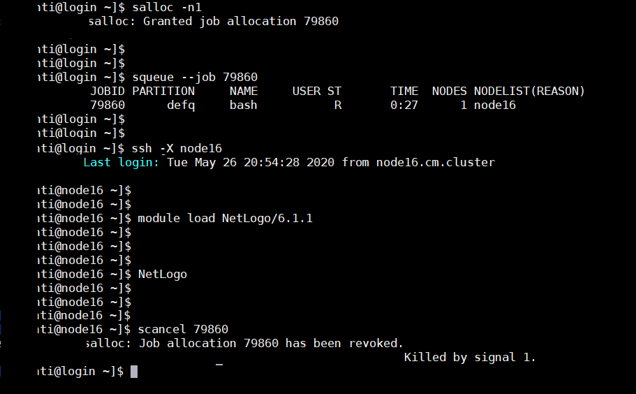
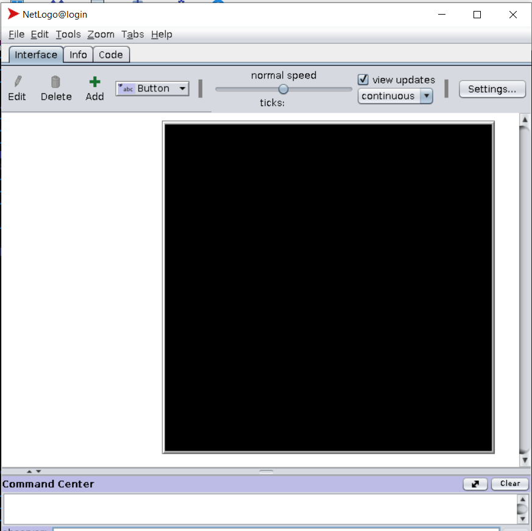

L’application NetLogo
Vu le fait que l’application NetLogo fonctionne en mode graphique, on vous demande de lancer l’application dans un nœud de calcul libre, et non pas au niveau de la machine login(login-hpc.marwan.ma), en exécutant les étapes suivantes :

location de ressource: allocation de nœud de calcul libre pour une durée de 2 heure par défaut, vous pouvez la changer en spécifiant la partition avec l’option « -p » (pour plus de détails sur les partitions voir le lien https://slurm.schedmd.com/salloc.html ) :
se connecter en mode ssh au noeud libre donnée par la commande précédente :
$ssh -X node16une fois connecté au nœud , charger les modules nécessaires pour le lancement de l’application NetLogo :
$module load NetLogo/6.1.1Lancement de l’application NetLogo :
$NetLogo

Warning
N’oubliez pas de libérer les ressources réservés (nœud de calcul) à la fin du calcul :
$cancel 79860